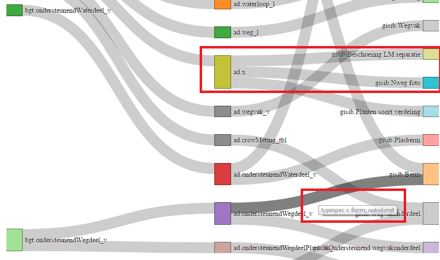

Deze site visualiseert de mapping tussen BGT, Areaaldata en NLCS
De visualisatie maakt gebruik van D3.js met de Sankey plugin. De .x objecten laten zien dat deze objecten niet voorkomen in het betreffende datamodel. Er zijn tooltips bij sommige 'lijntjes' om aan te geven op basis van welke attribuutwaarde de splitsing in objecttypen gemaakt wordt. Om het overzicht te bewaren is het complete areaal gesplitst in 3 delen. Voor de BGT en Areaaldata objecten kun je klikken op de node om naar de documentatie van het betreffende objecttype te gaan.
